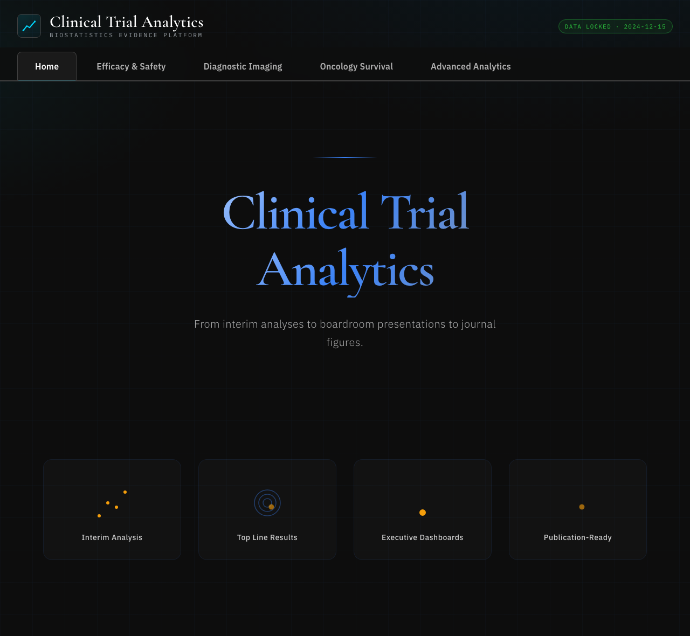

Clinical Trial Analytics
A biostatistics platform spanning efficacy & safety, diagnostic imaging, and oncology survival across four studies — from interim analyses to publication-ready figures.
Launch live demo
Runs in your browser
What it does
Turns trial analysis data into an interactive evidence platform — efficacy, safety, diagnostic imaging, and oncology survival across four sample studies, presented as live, publication-ready charts.
How it works
- Tabbed views: efficacy & safety, diagnostic imaging, oncology survival, and advanced analytics.
- Derived measures and visualizations — summary statistics, Number Needed to Treat (NNT), diagnostic curves, and survival analysis.
- Charts built with Plotly from sample CSVs (parsed via PapaParse); falls back to embedded data when opened straight from
file://.
PlotlyBiostatistics
SurvivalInteractive
